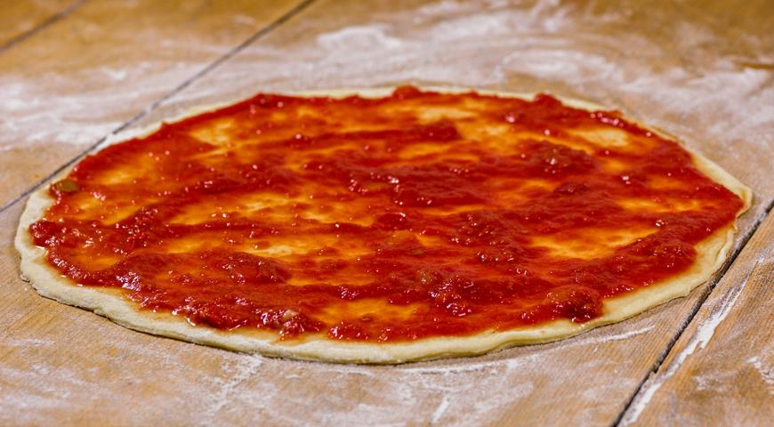

Новогодние рецепты для каждого


1. Готовим тесто. Дрожжи растворить в теплой воде. Просеять муку, добавить соль, воду с дрожжами. Замесить тесто, добавить оливковое масло.

2.Дать тесту подойти, а затем раскатать до толщины 0,5 см.
3. Выложить томатную пасту и начинку: маринованные огурцы, болгарский перец, томаты, окорок свиной копченый , обжаренные шампиньоны, сыр Моцарелла, сыр Пармезан тертый.
4. Готовить в предварительно разогретой духовке до 250 градусов примерно 8–10 минут. Поставить в самый низ решетку. Когда печь прогреется, поставить на решетку пиццу. За 3 минуты до конца запекания посыпать пиццу сыром Пармезан.
5.Когда сыр подрумянится, и снизу пиццы появится аппетитная корочка — вынуть пиццу из духовки.!
Создатель: Несолёная Полина Сергеевна
Все авторские права защищены
Новогодние рецепты от нашего талантливого сообщества
Возможно размещение рекламы
этот шедевр был сотворён руками Несолёной Полины в студии Iteen Academy